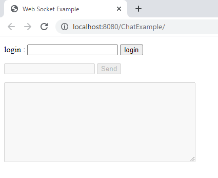
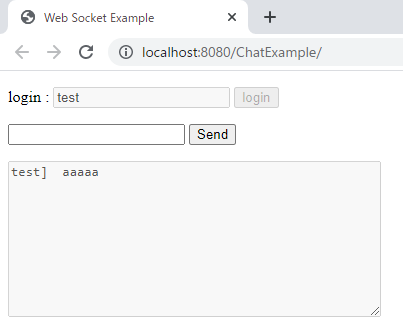
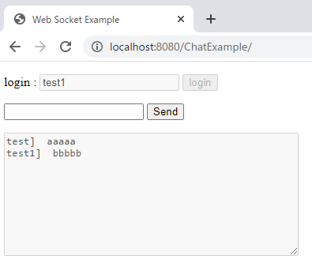
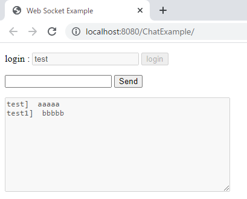
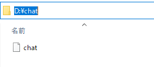
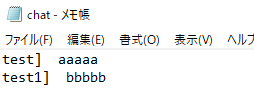

[Java] WebSocketでチャット履歴をローディングする方法
こんにちは。明月です。
この投稿はJavaのWebSocketでチャット履歴をローディングする方法に関する説明です。
私のメールでチャットプログラムを実装する時に、以前にチャットした内容をロードする方法に関して質問があって作成しました。
link - [Java] WebSocketを利用してユーザ(サイト運用者)が他のユーザとチャットする方法
我々がよく使うスマホでLineなどのチャットアプリの内容はどのぐらいはサーバに格納しますが、基本的にローカル(スマホ内部)に格納することになります。
もちろん、PCや他のスマホにも同期化するためにもサーバにも格納するかも知りません。
でも、ウェブは基本的にブラウザ政策でローカルファイルを操作(格納及び読み込み、書き込み)が制限されています。もし、ブラウザでローカルファイルが操作できればウェブサイトで接続することだけで内部システムを操作することができると意味なのでセキュリティ脆弱性の問題になります。
そうすれば、ブラウザからチャット内容をサーバに格納しなければならないです。
チャット内容を格納する方法は様々がありますが、個人的にはデータベースにチャット内容をすべて格納することよりファイルで格納する方がよいと思います。
でも、仕様によりDBに格納する場合もあるので、ファイルに格納することや読み込みするところをDBにinsert、updateで格納するし、selectで読み込みすることで修正するとよいです。
まず、サーバとクライアント(ブラウザ)と複雑なデータを送受信するためにJSONタイプのデータを扱うほうが良いです。
そのため、pom.xmlにJavaで使うJSONパーシングライブラリを使いましょう。
link - [Java] Jsonタイプのデータを使う方法(Gsonライブラリ)
<!-- https://mvnrepository.com/artifact/com.google.code.gson/gson -->
<dependency>
<groupId>com.google.code.gson</groupId>
<artifactId>gson</artifactId>
<version>2.8.7</version>
</dependency>
そしてブラウザから使うhtmlとjavascriptソースです。参考にJavascriptのライブラリはJqueryを使いました。
<%@ page language="java" contentType="text/html; charset=UTF-8" pageEncoding="UTF-8"%>
<!DOCTYPE html>
<html>
<head>
<title>Web Socket Example</title>
<style>
// エラーメッセージcss
.error-message {
color: red;
}
</style>
</head>
<body>
<!-- ログイン失敗する時に表示するエラーメッセージ -->
<p>
<span class="error-message"></span>
</p>
<!-- IDをいれてloginボタンを押下したらnameが格納する。 -->
<p>
login : <input type="text" id="username" name="username" class="login-package">
<button id="loginBtn" class="login-package">login</button>
</p>
<!-- チャットする時に使うチャットテクストボックスとボタン(初期はdisabled) -->
<p>
<input id="textMessage" type="text" disabled="disabled" class="chat-package">
<button id="sendBtn" disabled="disabled" class="chat-package">Send</button>
</p>
<!-- チャットなようが書いているチャット内容ボックス -->
<p>
<textarea id="messageTextArea" rows="10" cols="50" disabled="disabled"></textarea>
</p>
<!-- Jqueryライブラリリンク -->
<script src="//code.jquery.com/jquery-3.6.0.min.js"></script>
<script type="text/javascript">
// Javascriptカプセル
(function(_) {
})((function() {
// WebSocket変数
let webSocket = null;
// WebSocket接続関数
function connect() {
// ウェブソケットオブジェクト生成
webSocket = new WebSocket("ws://localhost:8080/ChatExample/chat");
// ウェブソケットがopenなら実行するイベント
webSocket.onopen = function(message) {
// チャットtextboxとボタンのdisabled解除
$(".chat-package").attr("disabled", false);
// 接続データ作成
let key = {
id : $("#username").val(),
state : 0 // state는 0
};
// 接続メッセージ送信
webSocket.send(JSON.stringify(key));
};
// 接続終了するイベント
webSocket.onclose = function(message) {
};
// エラーイベント
webSocket.onerror = function(message) {
};
// サーバからメッセージが受信すれば実行するイベント
webSocket.onmessage = function(message) {
// チャット内容のボックスのオブジェクト取得
let messageTextArea = document.getElementById("messageTextArea");
// データ作成
messageTextArea.value += message.data;
};
}
// メッセージ送信関数
function sendMessage() {
// テキストボックスのオブジェクト取得
let message = document.getElementById("textMessage");
// メッセージ送信のオブジェクト生成
let key = {
id : $("#username").val(),
state : 1, // stateは1
value : message.value // メッセージ内容
}
// メッセージ送信
webSocket.send(JSON.stringify(key));
// テキストボックスの初期化
message.value = "";
}
// ログインボタンのイベント
$("#loginBtn").on("click", function() {
// IDテキストボックスに内容がなければ
if ($.trim($("#username").val()) === '') {
// エラー表示
$(".error-message").html("Please input the name textbox.");
// 関数終了
return false;
}
// エラーメッセージ削除
$(".error-message").html("");
// ログインのテキストボックスとボタンをdisabled
$(".login-package").attr("disabled", "disabled");
// 接続
connect();
});
// チャットボタンを押下するとメッセージ送信
$("#sendBtn").on("click", sendMessage);
// テキストボックスにキーが押下するとenter関数実行
$("#textMessage").on("keydown", enter);
// テキストボックスにエンターキーが押下すればメッセージ送信
function enter() {
if (event.keyCode === 13) {
sendMessage();
return false;
}
return true;
}
return {};
})());
</script>
</body>
</html>
import java.io.File;
import java.io.FileInputStream;
import java.io.FileOutputStream;
import java.util.LinkedList;
import java.util.List;
import java.util.Optional;
import javax.websocket.OnClose;
import javax.websocket.OnMessage;
import javax.websocket.OnOpen;
import javax.websocket.Session;
import javax.websocket.server.ServerEndpoint;
import com.google.gson.Gson;
// ws://ホスト/chat接続時
@ServerEndpoint("/chat")
public class Chat {
// メッセージタイプのクラス
class ChatMessage {
// id
private String id;
// state
private int state;
// 内容
private String value;
// getter, setter
public String getId() {
return id;
}
public void setId(String id) {
this.id = id;
}
public int getState() {
return state;
}
public void setState(int state) {
this.state = state;
}
public String getValue() {
return value;
}
public void setValue(String value) {
this.value = value;
}
}
// セッションとidを持っているセッションクラス
class ChatSession {
// WebSocketセッション
private Session session;
// id
private String id;
// getter, setter
public Session getSession() {
return session;
}
public void setSession(Session session) {
this.session = session;
}
public String getId() {
return id;
}
public void setId(String id) {
this.id = id;
}
}
// ユーザリスト
private static List<ChatSession> users = new LinkedList<>();
// JSONをパーシングするクラス
private Gson gson = new Gson();
// WebSocket sessionでChatSessionを検索する関数
private ChatSession getSession(Session userSession) {
// sessionクラスとChatSessionクラスのsession変数を比較する検索する。
Optional<ChatSession> data = users.stream().filter(x -> x.getSession() == userSession).findFirst();
// データがあれば
if (data.isPresent()) {
// リターン
return data.get();
}
// なければnull
return null;
}
// セッション生成
private ChatSession createSession(ChatMessage msg, Session userSession) {
// まず、既存セッションがあるかを確認
ChatSession session = getSession(userSession);
// セッションがなければ
if (session == null) {
// インスタンス生成
session = new ChatSession();
// セッション格納
session.setSession(userSession);
// userリストに追加
users.add(session);
}
// id格納
session.setId(msg.getId());
// sessionリターン
return session;
}
// WebSocketが接続する時呼び出す関数
@OnOpen
public void handleOpen(Session userSession) {
}
// ブラウザからメッセージが受信すると呼び出す関数
@OnMessage
public void handleMessage(String message, Session userSession) {
// メッセージがJSONタイプで受信するが、ChatMessageクラスに変換
ChatMessage msg = gson.fromJson(message, ChatMessage.class);
// Stateが0なら初期接続
if (msg.getState() == 0) {
// セッション生成
createSession(msg, userSession);
try {
// ファイルからチャット内容を読み込んで送信
userSession.getBasicRemote().sendText(readFile());
} catch (Throwable e) {
// エラーが発生する。
e.printStackTrace();
}
// Stateが1なら一般メッセージ
} else if (msg.getState() == 1) {
// セッション確認する。
if (getSession(userSession) != null) {
// メッセージ送信
sendMessage(msg.getId(), msg.getValue());
// ファイルに格納する。
saveFile(msg.getId(), msg.getValue());
}
}
}
// チャット内容をファイルから読み込み。
private String readFile() {
// dドライブのchatフォルダのchatファイル
File file = new File("d:\\chat\\chat");
// ファイルがあるか検査
if (!file.exists()) {
return "";
}
// ファイルを読み込む
try (FileInputStream stream = new FileInputStream(file)) {
return new String(stream.readAllBytes());
} catch (Throwable e) {
e.printStackTrace();
return "";
}
}
// ファイルを格納する関数
private void saveFile(String id, String message) {
// メッセージ内容
String msg = id + "] " + message + "\n";
// ファイルを格納する。
try (FileOutputStream stream = new FileOutputStream("d:\\chat\\chat", true)) {
stream.write(msg.getBytes("UTF-8"));
} catch (Throwable e) {
e.printStackTrace();
}
}
// メッセージを送信する関数
private void sendMessage(String id, String message) {
// メッセージ内容
String sendMessage = id + "] " + message + "\n";
for (ChatSession user : users) {
try {
// メッセージ送信
user.getSession().getBasicRemote().sendText(sendMessage);
} catch (Throwable e) {
e.printStackTrace();
}
}
}
// WebSocketが閉めたら呼び出す関数
@OnClose
public void handleClose(Session userSession) {
// sessionをusersから探す。
Optional<ChatSession> session = users.stream().filter(x -> x.getSession() == userSession).findFirst();
// あれば削除
if (session.isPresent()) {
users.remove(session.get());
}
}
}
デバッグして実行しましょう。

loginテキストボックスとボタンが活性化になっているし、messageボックスとSendボタンが非活性化になっています。
testをいれてログインしましょう。

そしてaaaaaというメッセージを入れたらチャットでaaaaaというメッセージが表示されます。
他のブラウザでまた当該なurlを接続しましょう。
今回はtest1をIDとして入れてログインしましょう。
そうしたらtestで作成した内容が表示されます。
bbbbbというメッセージを入れて送信します。

今回はまたtestがあるブラウザを確認しましょう。

ブラウザ間にチャットは問題ないことを確認しました。
今回はchatファイルのデータがちゃんと作成されるかを確認しましょう。


一応、最初の仕様とおりに実行されます。
質問は以前にチャット履歴を表示しようという仕様でしたが、チャットルームの概念を入れると少し内容が変わる可能性があります。
チャットルームを作成すればチャットルームのキーを作成して、そのキーでファイルを読み込んだ後、チャットルーム別に履歴を別にします。入場する前の内容は表示しないという仕様を追加すれば各メッセージでもキーを作成して表示しなければならないです。もちろん、入場する時のキーをユーザが持ってなければならないし、様々な仕様を追加すると複雑になりますね。
ここまでJavaのWebSocketでチャット履歴をローディングする方法に関する説明でした。
ご不明なところや間違いところがあればコメントしてください。
- [Java] WebSocketでチャット履歴をローディングする方法2021/06/15 18:34:45
- [Java] WebSocketを利用してユーザ(サイト運用者)が他のユーザとチャットする方法2021/06/15 17:20:08
- [Java] HttpConnectionを利用してウェブページを取得する方法2020/05/20 23:53:24
- [Java] Jsoupを利用してXMLファイル(HTML)を扱う方法2020/05/19 19:32:21
- [Java] 日付フォーマット(SimpleDateFormat)を使う方法2020/03/25 00:36:53
- [Java] サーブレット(Servlet)の環境でファイルアップロード(プログレスバーでファイルアップロード状態を表示する方法)する方法2020/03/24 00:48:21
- [Java] Spring環境でファイルアップロード(プログレスバーでファイルアップロード状態を表示する方法)する方法2020/03/22 23:15:12
- [Java] FTPに接続してファイルをダウンロード、アップロードする方法(FTPClient)2020/03/20 02:44:36
- [C#] 44. ファイル(FileInfo)とディレクトリ(DirectoryInfo)を扱い2021/10/05 19:29:34
- [C#] 43. ストリーム(Stream)とバイナリ(byte[])、エンコード(Encoding)、そしてusingを使い方とIDisposableインターフェース2021/10/04 18:33:04
- [C#] 42. ファイルを扱い(IO)とファイルメタデータ(FileInfo)を使い方2021/10/01 20:10:21
- [C#] 41. Taskクラスとasync、awaitを使い方2021/10/01 18:59:14
- [Javascript ] WebのFull calendar(スケジュールカレンダー)の使い方法2021/07/15 21:35:36
- [Java] 56. Web serviceのサーブレット(Servlet)で初期化作業(properties設定)2021/07/02 17:10:36
- [Java] 55. Spring frameworkに文字化けを解決する方法(Encoding設定)2021/06/30 16:37:16
- [Java] 54. Spring frameworkでWeb filterを使う方法2021/06/29 18:25:12
- [Java] 53. ウェブサービス(Web service)でエラーページを処理する方法2021/06/25 13:35:54
- [Design pattern] 1-3. ファクトリメソッドパターン(Factory method pattern)2021/06/23 19:45:37
- [Java] WebSocketでチャット履歴をローディングする方法2021/06/15 18:34:45
- [Java] WebSocketを利用してユーザ(サイト運用者)が他のユーザとチャットする方法2021/06/15 17:20:08
- [Design pattern] 1-2. ビルダーパターン(Builder pattern)2021/06/11 19:06:28
- [Design pattern] 1-1. シングルトンパターン(Singleton pattern)2021/06/09 19:40:05
- [Design Pattern] デザインパターンの紹介2021/06/08 20:42:36